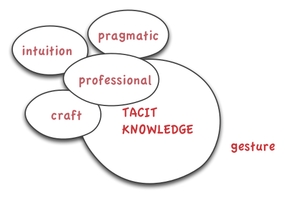
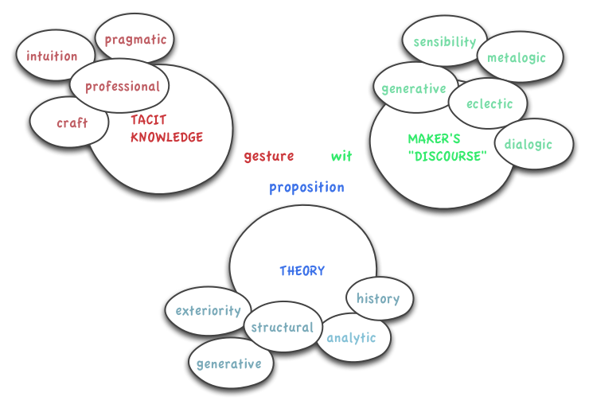
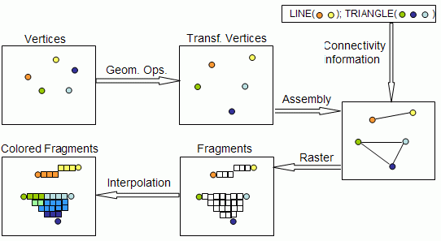
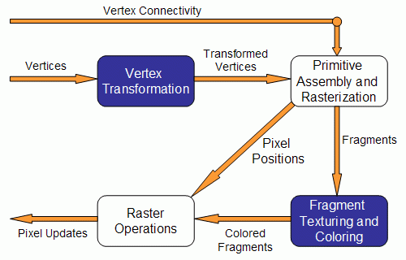
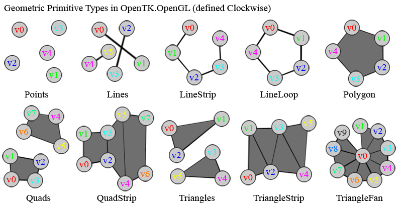

Agenda
- Course Intro
- Syllabus
- Admin: Piazza
- Your Interests
- Course Breakdown
- Workshops 1-2
- Lecture 1
???



"Prepare a 10 minute presentation of your portfolio"
interactive graphics : an external signal that controls the rendering of digital content
OpenGL:
glEnableClientState( GL_VERTEX_ARRAY );
glVertexPointer( 2, GL_FLOAT, 0, lineVerts );
lineVerts[0] = start.x; lineVerts[1] = start.y;
lineVerts[2] = end.x; lineVerts[3] = end.y;
glDrawArrays( GL_LINES, 0, 2 );
glDisableClientState( GL_VERTEX_ARRAY );
Cinder:
gl::drawLine();
OpenGL: A set of APIs to interface with graphics hardware



" make simple things simple and hard things possible "
class BasicApp : public AppBasic {
public:
// Cinder will always call this function whenever the user drags the mouse
void mouseDrag( MouseEvent event );
void keyDown( KeyEvent event );
// Cinder calls this function 30 times per second by default
void draw();
// This will maintain a list of points which we will draw line segments between
list mPoints;
};
void BasicApp::draw()
{
gl::setMatricesWindow( getWindowSize() );
// this pair of lines is the standard way to clear the screen in OpenGL
gl::clear( Color( 0.1f, 0.1f, 0.1f ) );
// We'll set the color to an orange color
glColor3f( 1.0f, 0.5f, 0.25f );
// now tell OpenGL we've got a series of points it should draw lines between
glBegin( GL_LINE_STRIP );
// iterate across our list of points, and pass each one to OpenGL
for( list::iterator pointIter = mPoints.begin(); pointIter != mPoints.end(); ++pointIter ) {
glVertex2f( *pointIter );
}
// tell OpenGL to actually draw the lines now
glEnd();
}
void setMatricesWindow( int screenWidth, int screenHeight, bool originUpperLeft )
{
glMatrixMode( GL_PROJECTION );
glLoadIdentity();
#if defined( CINDER_GLES )
if( originUpperLeft )
glOrthof( 0, screenWidth, screenHeight, 0, -1.0f, 1.0f );
else
glOrthof( 0, screenWidth, 0, screenHeight, -1.0f, 1.0f );
#else
if( originUpperLeft )
glOrtho( 0, screenWidth, screenHeight, 0, -1.0f, 1.0f );
else
glOrtho( 0, screenWidth, 0, screenHeight, -1.0f, 1.0f );
#endif
glMatrixMode( GL_MODELVIEW );
glLoadIdentity();
glViewport( 0, 0, screenWidth, screenHeight );
}
Important contact information goes here.